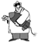

Willkommen zur Tank Blaster II- Dokumentations-Datei - |
|
I.
|
Systemanforderungen |
|
II.
|
Tank Blaster Steuerung |
|
a)
|
Das Intro |
|
b)
|
Das Eingabemenü |
|
c)
|
Das Spiele |
|
d)
|
Der Laden |
|
e)
|
Das Extro |
|
III.
|
Eine ernsthafte Beschreibung des Spiels |
|
a)
|
Das Spiel |
|
b)
|
Der Feind |
|
c)
|
Die Ausrüstung |
|
IV.
|
Tank Blaster registrieren |
|
V.
|
Credits |
|
VI.
|
Trouble Shooting |
|
VII.
|
Tank Blaster Versionsgeschichte, was neu ist |
|
VIII.
|
Tank Blaster im Internet |
|
IX.
|
Lizenzbestimmungen |
| Dateiname | Beschreibung |
| Readme.html | HTML Startseite der Dokumentation |
| Tank Blaster.exe | Tank Blaster Programm (ausführbare Datei) |
| tank.cfg | Datei zum Speichern der Benutzereinstellungen (wird von der ausführbaren Datei erzeugt) |
| Uninstall.exe | Deinstallations-Programm |
| \doc | Ordner mit der Dokumentation (HTML-Version) |
| Taste | Befehl |
| F1 | Hilfe |
| + | Anzahl der Runden erhöhen |
| - | Anzahl der Runden verringern |
| o | Menü für Spieloptionen aufrufen |
| Esc | Eingabemenü verlassen und Spiel starten |
| Geschoß Wiedereintritt: |
Ist diese Option angeschaltet, kommt eine seitlich aus dem Spielfeld geschossene Kugel nach einer "Erdumrundung" wieder auf der entgegengesetzten Seite ins Spielfeld geflogen. Mögliche Einstellungen: (immer) aus, immer an und Zufall. Ist in einer Runde der Geschoß Wiedereintritt aktiv, erscheint in der Statusleiste am unteren Bildschirmrand das links abgebildete Symbol. |
| Anzahl Bäume: | Legt fest, wie viele Bäume bereits zu Beginn der Runde im Spiel sind. Mögliche Einstellungen: 0 (keine), 1, 2 oder Zufall (d. h. 0, 1 oder 2). |
| Aggressivität der Wolke: | Legt fest, wie aggressiv die Wolke auf Durchschießen reagiert. Mögliche Einstellungen: 0 (völlig gelassen) - 100 (extrem aggressiv). |
| Schneller Rundenstart: | Ist diese Option aktiviert, werden beim Start einer neuen Runde nicht erst die Spieler und ihre Positionen gezeigt, sondern das Kampfgeschehen beginnt sofort. |
| Sprache: | Hiermit kann man jederzeit die eingestellte Sprache von Tank Blaster II ändern. Das Sprachmenü wird ebenfalls automatisch beim allerersten Start von Tank Blaster II angezeigt. |
Die folgenden Befehle sind nur per Tastatur möglich:
| Taste | Befehl |
| F1 | Hilfe |
| 1, 2, 3, ..., 9, 0 | Detailinformationen über Spieler 1, 2, 3, ..., 9, 10 anzeigen |
| Leertaste | aktuelle Rangliste anzeigen |
| Strg + e | Runden sofort beenden (alles atomisieren) |
| Strg + n | Spielernamen ein-/ausblenden |
| Strg + p | Pause |
| Strg + q | Programm beenden |
Diese Tastaturbefehle sind auch per Maussteuerung möglich:
| Taste | Befehl |
| Pfeil hoch | Kraft um eins (+ Shift = um zehn) erhöhen |
| Pfeil runter | Kraft um eins (+ Shift = um zehn) verringern |
| Pfeil rechts | Kanone gegen UZS um 1° (+ Shift = um 10°) drehen |
| Pfeil links | Kanone im UZS um 1° (+ Shift = um 10°) drehen |
| + | Kraft um 10 erhöhen |
| - | Kraft um 10 verringern |
| i | Schußwinkel (Richtung) invertieren |
| Tab | Nächste Waffe auswählen |
| Shift + Tab | Vorherige Waffe auswählen |
| Eingabetaste | Kanone abfeuern |
| s | Scroll-o-Mat ein-/ausschalten (scrollen mit den Pfeiltasten) |
| e | Motor anlassen |
Mausbefehle:
Die Statusleiste befindet sich am unteren Rand des Bildschirms. Sie enthält folgende Steuerelemente für die Maus:
| Taste | Befehl |
| F1 | Hilfe |
| Esc | Laden verlassen/nächster Spieler |
| Strg + p | Pause |
| Strg + q | Programm beenden |
Mausbefehle:
| Taste | Befehl |
| Pfeil hoch | hochscrollen |
| Pfeil runter | runterscrollen |
| Eingabetaste | ausgewählte Sache kaufen |
| Esc | zurück zum Hauptmenü |
| Strg + p | Pause |
| Strg + q | Programm beenden |
Mausbefehle:
| Name | Symbol | Beschreibung |
| D. Dödel | Diese Typen haben kein Hirn, das sie irgendwie stören könnte. Sie feuern einfach ihre Kanonen ab. Du kannst sie dazu benutzen um gegen Deine kleine Schwester zu spielen. Die einzige Bedrohung ist eine Situation, in der D. Dödel unter einem anderen Spieler steht und nichts einem direkten Schuß im Weg ist. | |
| Frederic | Obwohl er nicht sehr treffsicher ist wenn es stürmt,
verbessert
er sein Zielen von Schuß zu Schuß - knall ihn einfach
nachdem
Du die besseren Gegner losgeworden bist. Frederic kann auch direkte Schüsse durchführen. |
|
| Prof. Nuke |  | Harten Typen lieben es heiß - er auch. Wenn Du Toast willst, gib ihm eine Chance. Du wirst gut durchsein. |
| Harald | Stell Dir Deinen schlimmsten Alptraum vor, direkt aus der Hölle, Terror und Schmerz verursachend. Willst Du noch was schlimmeres sehen? Ok, ok, das war nur Spaß. Harald ist sogar noch tödlicher. | |
| Mr. X | Er wechselt seine Identität schneller als die meisten Leute ihre Unterwäsche. Du weißt nie, wer gerade den Abzug drückt ... | |
| Du | Sehr schwer einzuschätzen. Kann teilweise sehr gefährlich und gemein spielen. Hat meist eine Vorliebe für große Waffen. |
| Symbol | Beschreibung | Symbol | Beschreibung |
|
|
Spurgeschoß. Verursacht keine Schäden. Dient zum gefahrlosen Testen von Schußbahnen. |
|
MFS 3-fach. MehrFachSprengkopf, feuert drei Kugeln vom Typ "Granate, groß" jeweils um einige Grad gestreut ab. |
|
|
Granate, Standardgeschoß. Explodiert beim Einschlag. |
|
Brösler, klein. Löst bei Berührung mit dem Boden den Untergrund auf. |
|
|
Granate, groß. Stärkere Explosion als die Standard-Granate. |
|
Brösler, groß. Wie die kleine Ausgabe, jedoch erheblich stärkere Wirkung. |
|
|
Atombombe. Große Explosion beim Einschlag. |
|
Überraschungsei. Hier kann alles enthalten sein, von der Granate bis zum Luftschlag. Der Spieler weiß im Vorhinein nicht, mit was er schießt. Böse Zugen behaupten, es würde gar nicht stimmen, daß in jedem siebten Ei ein Plasmaschmelzer ist. |
|
|
H-Bombe. Riesige Explosion. |
|
Moskitos. Einmal losgelassen, suchen sie sich das nächstgelegene Opfer und saugen dieses aus. Fast immer tödlich. |
|
|
Plasmaschmelzer. Kann große Areale des Spielfelds mit einem einzigen Schlag atomisieren. |
|
Schockwelle. Besitzt einen großen Aktionsradius. Entfaltet tödliche Wirkung ohne den Untergrund zu zerstören. Nützlich, wenn wegen der Gefahr des Auslaufens von Wasser keine Explosivwaffen in Frage kommen. |
|
|
Wunderpalme. Diese Bäume können an der richtigen Stelle gepflanzt eine sehr effektive Schutzfunktion haben, denn sie schlucken fast alle Kugeln. |
|
Luftschlag. Nach dem Platzieren der Signalboje wird die markierte Stelle aus der Luft mit einem Flächenbombardement belegt. |
|
|
Feuerkugel. Brennen beim Einschlag. Hauptanwendung ist das Niederbrennen von lästigen Bäumen. |
|
Splitterbombe. Am Scheitelpunkt der Schußbahn zerplatzt dieses Projektil in mehrere kleine Bomben mit Streuwirkung. |
|
|
Wasser. Überflutet die dem Einschlagspunkt nächstgelegene Senke. Wasser kann beim Zerstören von begrenzenden Rändern auslaufen und so große Teile des Spielfelds unter Wasser setzen. |
|
Laser. Feuert einen Laserstrahl ab, der stark genug ist sogar Bäume in Brand zu setzen. |
|
|
Maulwürfe. Graben sich zuerst ein Stück in die Erde ein und explodieren dort sternförmig. |
| Symbol | Beschreibung |
|
|
Scroll-o-Mat. Der Spieler erhält damit die Möglichkeit sich das gesamte Spielfeld anzusehen ohne zu schießen. |
|
|
Energieschild. Schutzschild, das Schäden durch Treffer, nahe Explosionen und Runterfallen verhindert. Verbraucht sich dabei allerdings selbst. |
|
|
MFS Verstärker. Vergrößert die Explosionen von MFS 3-fach. Stufe 1: Atombomben-Explosionen, Stufe 2: H-Bomben-Explosionen |
|
|
XM-V12 Panzer. Mit diesem fahrbaren Panzermodell erhält der Spieler die Möglichkeit anstelle einen Schuß abzugeben, seine Position im Spielfeld zu ändern. |
|
|
Diesel (F54). Auch der XM-V12 Panzer braucht Sprit zum Fahren. |
Registrierte Spieler erhalten...
... einen persönlichen Registrierungs-Code per Post oder E-Mail um die Zeitbegrenzung der Demoversion auszuschalten.

|
Ahornallee 113 D-86899 Landsberg a. Lech |
Wenn Sie bereits für eine ältere Version von Tank Blaster registriert sind, beträgt die Registrierungsgebühr für das Update auf Tank Blaster II nur 5 Euro. (Bitte trotzdem das Bestellformular ausfüllen und ausdrucken.)
Neben dieser konventionellen Methode per Post, können Sie Tank Blaster II auch on-line über den ShareWare-Service ShareIt registrieren. Besuchen Sie dazu einfach die Internetseite von ShareIt http://www.shareit.com und suchen Sie nach Tank Blaster II oder geben Sie die Nummer 143303 ins das Suchfeld ein. Sie erhalten dann per E-Mail ihren persönlichen Registrierungs-Code. Die Registrierungsgebühr für die on-line Registrierung beträgt 10 Euro.
Das Installationsprogramm von Tank Blaster wurde mit "Install Maker" Version 1.2 von Clickteam erstellt.
Die Internetseite von Clickteam:
MOD-Player
Tank Blaster benutzt die DirectSound Mod-Player Klasse "CModPlayer", Copyright (c) 1997 by Mark Feldman. Sie wird verwendet, um die Musikdateien (.MOD) im Intro und Extro zu spielen.
Mark Feldmans Internetseite:
http://www.geocities.com/SiliconValley/2151
Musik (MOD-Dateien)
Die Musik im Intro ist die MOD-Datei "technomania" von trashcan/s8.
Für das Extro wird die MOD-Datei "riff-raff" von zapper verwendet.
In allen Fällen sollten Sie sicher stellen, daß mindestens DirectX Version 7.0 auf Ihrem System installiert ist und dieses funktionsfähig ist. Dies kann einfach mit dem DirectX-Programm "DxDiag" (standardmäßig im Verzeichnis C:\Programme\DirectX\Setup) überprüft werden.